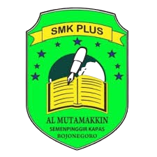
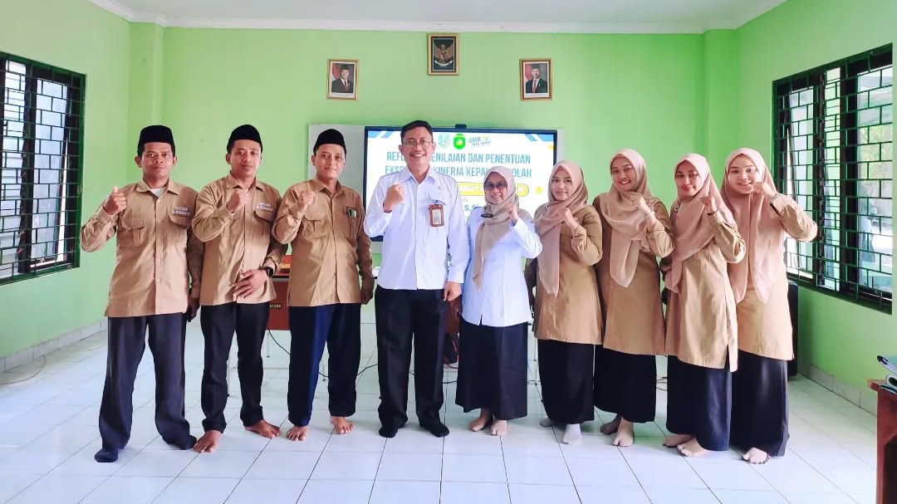

SMK Plus Al - Mutamakkin
SMK Plus Al-Mutamakkin adalah sekolah menengah kejuruan swasta berbasis pondok pesantren yang terletak di Kecamatan Kapas, Kabupaten Bojonegoro, Jawa Timur. Sekolah ini memadukan kurikulum pendidikan vokasi nasional dengan pendidikan moral spiritual ala santri demi mencetak lulusan terampil yang berakhlak mulia.

mewujudkan lembaga pendidikan kejuruan yang mampu membentuk karakter siswa peduli, mandiri, dan beradab. Sebagai sekolah berbasis pondok pesantren di Kapas, Bojonegoro, seluruh program strategisnya memadukan kompetensi praktis industri dengan pembiasaan nilai-nilai Islami